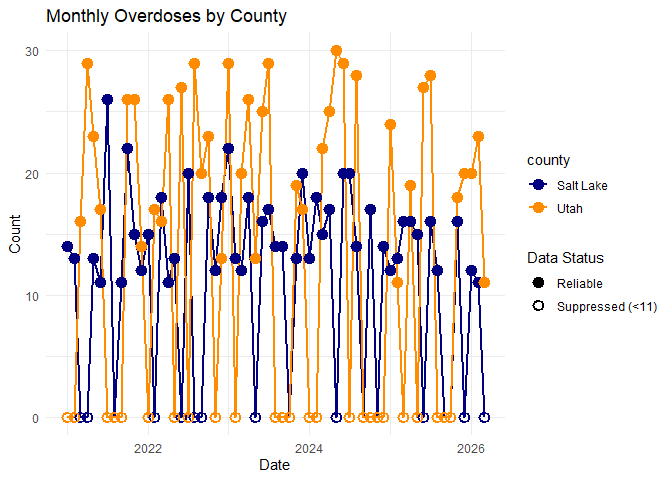
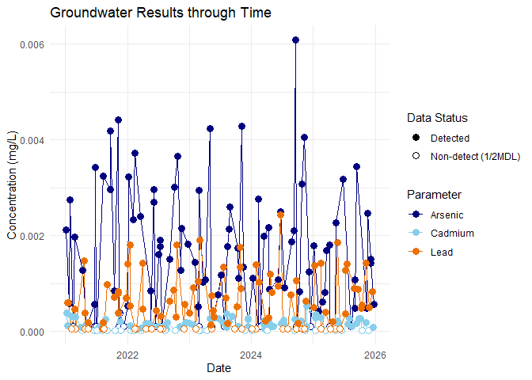

The goal of ggsuppress is to provide a seamless way to apply small-number suppression to public health data visualizations in ggplot2. Values below a specified threshold (default < 11) are automatically plotted at a proxy value and given distinct symbology.
Installation
You can install the development version of ggsuppress like so:
# devtools::install_github("peernisse/ggsuppress")Example Small Number Suppression
The geom_*_suppressed() functions automatically plot values below a threshold at a proxy value. This example uses defaults threshold of 11 and proxy_value of 0.
library(ggsuppress)
library(ggplot2)
# Using the built-in overdoses dataset
ggplot(overdoses, aes(x = month_date, y = count, color = county)) +
geom_line_suppressed(linewidth = 1) +
geom_point_suppressed(size = 3, stroke = 1.2) +
scale_color_manual(values = c("Salt Lake" = "navy", "Utah" = "darkorange")) +
scale_shape_suppress() +
theme_minimal() +
labs(title = "Monthly Overdoses by County", x = "Date", y = "Count")
Example Left-Censored Data Plotting
The threshold and proxy aesthetics can be used to dynamically apply substitution for laboratory “non-detect” results from a column in the dataframe. In this example, column Numeric_Results has non-detect results as NA. These are substituted based on values in MDL.
library(ggsuppress)
library(ggplot2)
# Using the built-in groundwater dataset
ggplot(groundwater, aes(x = Sample_Date, y = Numeric_Result, color = Parameter)) +
geom_line_suppressed(aes(threshold = MDL, proxy = MDL/2), suppress_na = TRUE) +
geom_point_suppressed(aes(threshold = MDL, proxy = MDL/2), suppress_na = TRUE, size = 3, fill = '#fff') +
scale_shape_suppress(values = c(19, 21), labels = c('Detected', 'Non-detect (1/2MDL)')) +
scale_color_manual(values = c('navy', 'skyblue', '#ed7000')) +
theme_minimal() +
labs(title = "Groundwater Results through Time", x = "Date", y = "Concentration (mg/L)")